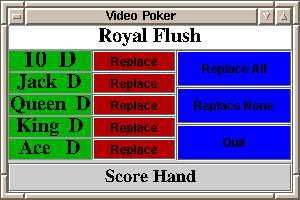

The player can reject none, some, or all of the cards. The rejected cards are replaced from the top of the deck.
Now the hand is scored.
Your program will announce which (only 1) of the following matches the hand:
Each line of the file will contain two fields, a number from 1 (for ace) to 13, and a character representing the suit: H for hearts, S for spades, C for clubs, and D for diamonds.
The face cards will be represented as numbers: 11 for jack, 12, for queen, and 13 for king.
A sample deck is provided in deck.txt. Here are some sample decks with the first five cards in the deck corresponding to a specific type of hand. You will have to rename the deck to deck.txt to use.
If your program cannot successfully open deck.txt, display a message to the console and exit. If your program should encounter problems while reading the deck , also put a message on the console and exit. We will not deliberately put errors in the deck.txt file.
Below is one example of the GUI:

The code that produced this gui is at PokerGUI.java. It must be completed by you. You must add
This GUI was created by Alex Balik, TA for section 005. Alex used a
BorderLayout. He placed the cards in
BorderLayout.WEST, the replace buttons in BorderLayout.CENTER and the rightmost buttons in the BorderLayout.EAST.
The top is a textfield in BorderLayout.NORTH and the
score button is in BorderLayout.SOUTH.
He used JPanels for the cards and buttons, setting them to
GridLayout to get the even spacing of the components.
He set the larger font size for components using the setFont method.
For example, the ScoreHand button was set to 18 point font:
btnScore.setFont(new Font("Times",Font.BOLD,18));
He got that interesting color of red using:
btnCard1.setBackground(Color.red.darker());You can check out colors on the http://java.sun.com/j2se/1.4.2/docs/api/ . Just select the Color class.
It was mentioned earlier that you must disable buttons.
To disable a button named btnReplaceAll, use the setEnabled
method:
btnReplaceAll.setEnabled(false);Here is the specification for disabling buttons:
| Button clicked | Disable these buttons | |
|---|---|---|
| Replace | The Replace button that was clicked, the ReplaceAll and the ReplaceNone buttons | |
| Replace All | All Replace buttons, Replace All and Replace None | |
| Replace None | All Replace buttons, Replace All and Replace None | |
The Card.java is provided for you. The Card class has been designed so that you can use another java class to sort an array of Cards. The Card class has a main which demonstrates how to sort a Card array. The line of code is
Arrays.sort (array, 0, 3);You must provide
import java.util.*;to use the sort.
An ace has the value of 1 so it gets sorted as a low value card but can be used as a high card (e.g. Royal Flush). Your code must deal with this if you choose to use the sort routine. The sort statement belongs in your model.
The model must have the following public methods:
Null constructor, which must initialize all of your instance variables.
This includes the deck of cards and the initial hand.
Method which accepts a integer value 0,1,2,3, or 4 and returns
the corresponding Card in the hand of cards.
Method which receives an integer value 0, 1,2, 3, or 4 and
replaces that card in the hand of cards. The replacement card will be
the next card in the deck. The method returns the replacement Card.
Method that returns a String indicating one of tthe following
matches for the current hand:
Royal Flush Straight Flush Four of a Kind Full House Flush Straight Two Pairs One Pair No Pair
Method used for testing the public methods in this class.
You may not have Any Other Public Items in your code. All other items must be private.
public static void main (String [] args) {
PokerGUI gui = new PokerGUI();
}
Create the model inside the PokerGUI class like you
did for program 3.
Extra credit will be offered for assignments that are submitted early. You will receive one points of extra credit for each full day early that you submit your program. A maximum of 10 points of extra credit may be obtained. We will examine the dates of the files in your submit locker to determine the amount of extra credit. The file with the latest submission date will be the date we use to determine the extra credit.
In order for you to receive extra credit you MUST submit a working program that meets the project specifications. Programs which do not compile or deviate from the specifications will not receive extra credit.
Each method, instance variable and class you write in JavaHtmlLine.java, JavaHtmlModel.java and JavaHtmlGui.java must be documented using the JavaDoc style of documentation. Remember all JavaDoc starts with /** and ends with */. The course style guidelines contain information on using JavaDoc.
Remember that when generating JavaDoc you must first document the description of the item (method, instance variable, or class) and then put your tags (@author, @param, and/or @version). Good places to find JavaDoc examples include:
You are expected to work on your program after you have finished your lab. You are REQUIRED to work during the entire allocated lab time on your program, unless it is complete.
While working in lab on your program, the ONLY person who you should consult for assistance is the lab instructor. Working with other students on this program is strictly forbidden.
You are expected to work on your code during lab. You may not leave lab until a TA has cleared that your code is working and submitted and the lab for that session is working and submitted.
We recommend the following milestones:
Before you submit your work, make sure the program:
You should submit your program through Wolfware Submit:
http://submit.ncsu.edu
The name of the assignment is Program_4. Submit your source code file, PokerGUI.java and PokerModel.java. only. Do not attempt to submit .class files.
The electronic submission deadline is precise and does not allow for late work. Do not be late.
Count on the system going down and on other students looking for workstations the last day the assignment is due. Count on serious server delays because everyone is trying to access the submit software during the last few minutes the program is due.
You are able to make multiple submissions of the same file (the later submissions overwrite the earlier ones with the same file name). To be on the safe side, start submitting your work as soon as you have completed a substantial portion.
When you turn in your program electronically,
print off the grade sheet
and fill out the following information:
Staple the grade sheet to the top of your program source file listing and bring the entire packet to class on the lecture following the electronic submission deadline. I collect the packets at the beginning of class time.